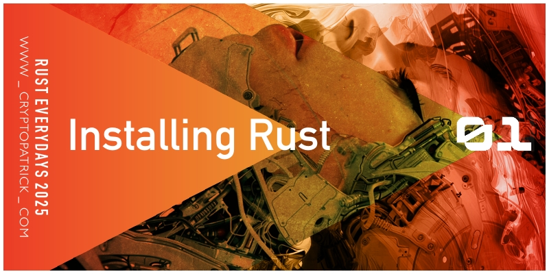

Who am I?: Hi! My name is Patrick. I was born and raised in Gothenburg, on the Swedish West Coast.
I’m a trained Computational Linguist, specializing in Large Language Models (LLM) and Agentic Artificial Intelligence. I’m passionate about building systems that are simple, have few parts, are easy to maintain, and very fast. I’m looking for my first professional developer role. I have several years of experience in developing Open Source Software.
Chalmers and the University of Gothenburg Sweden*
Currently enrolled in the Bachelor of Science programme in Mathematics.
ProWave, Online 2015
Three months intesive training on technical analysis of financial markets using
the Elliott Wave technique, as well as risk evaluation and portfolio management.
University of Gothenburg, Sweden (2004 - 2007)
B.Sc. Computational Linguistics. Coursework included: Logic, Prolog, Formal Syntax, Formal Semantics, Phonetics, Dialogue Systems, Programming for Corpus Linguistics, Artificial Neural Networks, Research Methodology, Automatic Analysis of Speech and Speech Synthesis, and Parsing Algorithms.
Prosolvia Interactive, Sweden (1996 - 1997)
Virtual Reality Trainee. Coursework included: Programming in Java, 3D modelling with Pro/Engineer, Adobe Photoshop, Illustrator, Premiere, Macromedia Director, Sound Editing, and VR simulation using EON Reality.
1-year Art School and Photography School, Sweden 1996
Folkuniversitetet and ABF
Basic training in artistic expression, including painting, drawing, sculpture, printmaking, and art history. At ABF, three months of basic training in black and white photography and traditional darkroom printing techniques.
University of Gothenburg, Sweden 1995
One year of studying philosophy, including courses in logic and knowledge theory.
Professional Experience
Financial Markets Trader and Blockchain Developer
(2018 - 2025) Freelance Developer
For close to 7 years I have been programming open source software for blockchain and financial markets. Side projects include: HoneyLedger - a blockchain that can be used to track honey from producer to consumer shelf, BikeChain - a proof of concept where bike owners can register their bike on a blockchain to prove ownership, MiniFIX - a Financial Exchange Information Rust crate, PineCoder - developed hundreds of financial indicators and trading strategies in the PineScript language that can be used on the TradingView platform. Currently exploring Vibe-Coding as a method for rapid prototyping of software.
Swedish Chamber of Digital Currency Commerce
(2015 - 2018) Founder
Founded the non-profit association SCDCC (Swedish Chamber of Digital Currency Commerce). The purpose of the association was to increase knowledge about Bitcoin, digital currencies, and blockchain technology among companies, consumers, and government authorities. Assisted with marketing work for the founders of the cryptocurrency Ethereum prior to its launch. Met with Swedish minister of digitalisation, and organised the Blockchain for Banks event. Organized multiple Blockchain events under the BitCoast name.
Bäck-n-Bauer HB and Lucky Punk AB
(2009 - 2014) Co-Founder (BnB), Producer, and Director
Worked with corporate clients, such as Bic, Volvo AB, Volvo Construction Equipment, Telia, and Estrella, in producing and directing marketing commercials. Gained solid experience in planning and executing a complete ad commercial production, leading a team, managing multiple projects, editing video, recording audio, and working with special effects teams. Gained broad experience in producing audiovisual content, from initial client pitch to final delivery.
Semcon Human-Machine Interface Division
(2007 - 2009) Design Engineer/Project Coordinator
Developed proof-of-concepts in Human-Machine Interaction and ergonomics. Was assigned as responsible for language technology area at Semcon HMI. Gave lectures in the fields of Artificial Intelligence and Dialogue Systems. Programmed multimedia marketing in Adobe Flash for Semcon AB. Co-coordinator (together with Patrik Palo, head of HMI-development at Volvo Car Corporation) for Pre-EFESOS, an 8 month research project on next-generation in-vehicle Human-Machine Interaction. The project resulted in approved funding of over 80 million SEK from VINNOVA. Participated in the development of research proposals. Coordinated budgeting work among participants from Chalmers, Volvo Car Corporation, Lund University, HiQ, and the Viktoria Institute.
Prosolvia Research & Technology and E3
(1998 - 2004) Web Developer and Graphic Designer
Responsible for developing the company’s website, primarily using HTML for all design and layout since CSS1 was not yet fully supported by major browsers such as Netscape and Internet Explorer. Under the guidance of the Marketing Manager, also created marketing materials for both web and print, mainly utilizing QuarkXpress and Adobe Pagemaker. Additionally, assisted engineers with a range of graphic production tasks.
Open Source Software Development
üèÑ‚Äç‚ôÄÔ∏è 100DaysOfVibe
For a period of 100 days, I’ll be creating one Vibe-coded project from start
to finish - everyday. For accountability, I’ll then post each project on this webpage.
Project Website: https://100-days-of-vibe.vercel.app/
ü¶Ä Rust Crates
I develop and maintain the following Rust open source libraries:
PGF2JSON, ISU, GFCORE, HAREL, GRAPH_MVCC, SquadLeader, Timed Release Crypto
Crates Link: https://crates.io/users/cryptopatrick
üíª GitHub Profile
I like develop and freely share code for others to use.
I’m a strong believer in the power of Open Source Software and the GPL license.
GitHub Link: https://www.github.com/cryptopatrick
Writings
Technical Writing
I run a blog (this website) on which I write about various topics - mostly tech.
I enjoy writing as a way to better understand something complicated. Link: https://cryptopatrick.com/ 
Short Stories
I’ve recently started writing fiction, in the form of short stories.
I haven’t published anything, and my writing is strictly done as a hobby.
Feel free to read my first short story: The Time Lock.
Agentic Micro Economy
Coordination of work between AI Agents by spinning up an Auction to bid on Requests-for-Work contracts. The contract winner buys Prompt-run from LLM MCP Server. Payment between User, Agent, and Server is settled on blockchain.
Papers
Pending
Thesis
Ontologies in Issue-based Dialogue Systems, University of Gothenburg, Sweden, 2007.
Thesis work for B.Sc. in Computational Linguistics - thesis not published.
Community and Communication
Co-organizer
Helped organize the Unofficial Libra Blockchain Hackathon 2019, where programmers
around the world competed to develop applications using Facebook Libra’s cryptocurrency,
Libra. The prize was 1 Bitcoin (today worth over 1,000,000 SEK).
I’m still the maintainer of the unofficial Libra developers Discord channel.
Link: https://medium.com/@hacklibra/hacklibra-winners-8da1a9124628
Keynote Speaker
At SEB HQ (Stockholm) for the Capital Market Experts annual meeting,
2015. Gave a one-hour presentation on Bitcoin. The crowd roared with laughter when I
claimed that the price of a single bitcoin would one day reach well above 10,000 dollars.
Project Leader
Assisted Charlie Lee, the creator of the Litecoin cryptocurrency during a trademark infringement case. The dispute was resolved by the EU Patent Office in Spain.
Artificial Intelligence
LLM development from scratch, OpenAI API, MCP, LangChain, LangGraph, RAG architectures, Qdrant Vector DB, Vercel AI SDK, LM Studio, evaluation and fine-tuning frameworks.
Fun Facts
Demokraterna
In 2016, I helped start the political party Demokraterna together with Gothenburg politician
Martin Wannholt. I was part of the original steering group that met at the City Hall in
Gothenburg, Sweden. One achievement I am particularly proud of, is that I arranged for
the party to move from its original web address, www demokraternaigoteborg se to www.
demokraterna.se . The later domain was owned by a politician in the Stockholm area. I was
able to contact him via the domain Internet Service Provider and successfully negotiate the
purchase of https://demokraterna.se/ . I think that showed initiative from my side.
Locus Sound System
With a group of friends, I organized Klubb Locus (a deep house club night at the venue
Pustervik in Gothenburg) every month for 20 years in a row. This experience tought me a
lot about oranization events, communication, consistent branding and marketing.